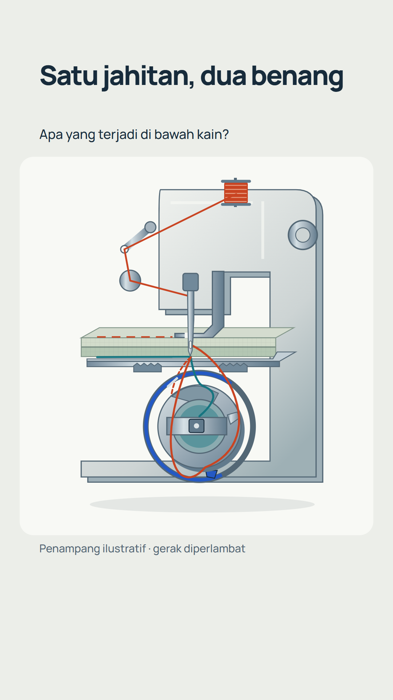
01: Satu jahitan, dua benang
0.0–5.7 s
A familiar machine sews a short seam, then reveals the concealed second thread.
Di Balik Benda v3 · Visual 2.5D · 90 seconds · 16 explanatory shots · static layouts before synthesis and animation

A familiar machine sews a short seam, then reveals the concealed second thread.
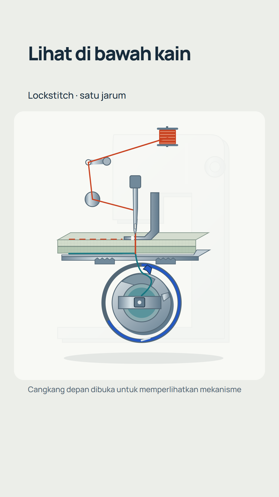
Housing becomes transparent while the needle axis and cloth stay fixed.
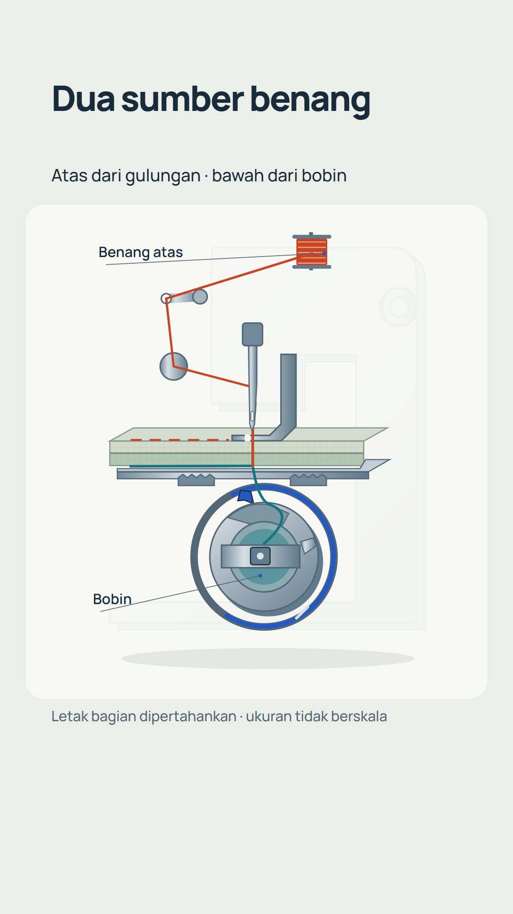
Separate thread sources along their real locations, retaining the housing landmark.
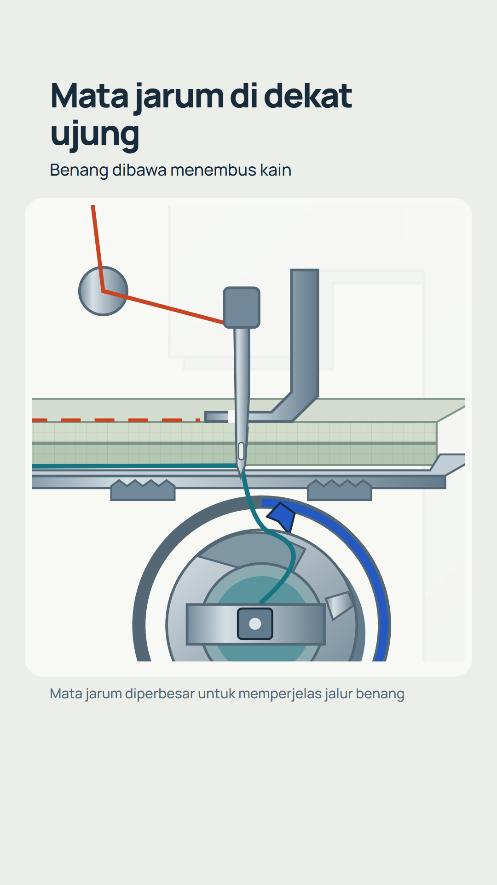
A macro follows the eye down through two fabric layers.
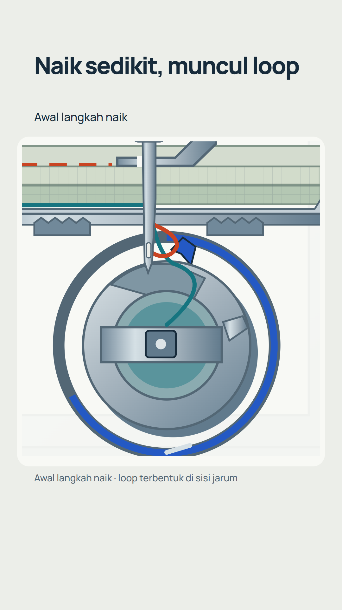
Hold a slow macro through bottom dead center, short rise, and loop opening.
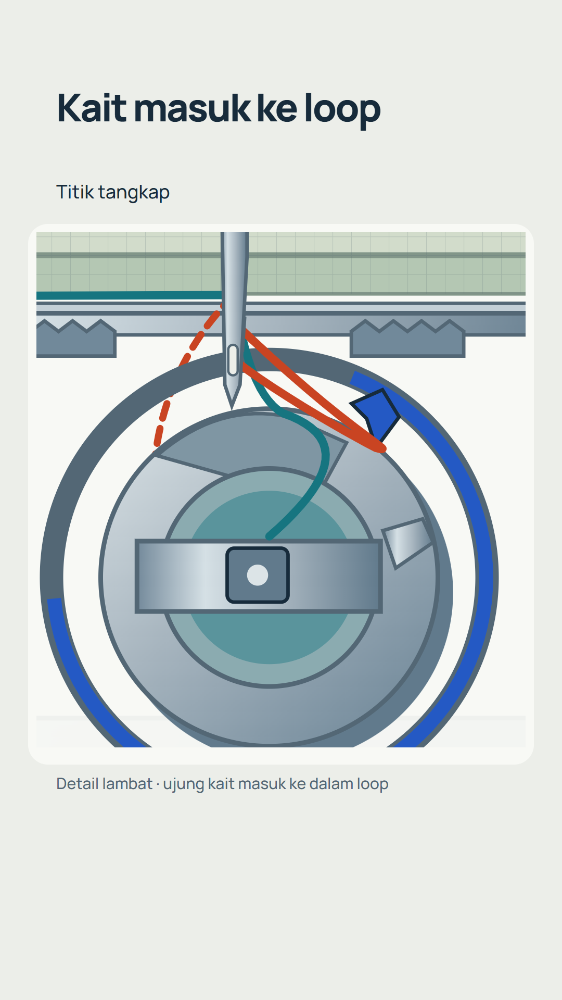
Stable contact macro: hook tip approaches, crosses the opening, and retains the upper-thread loop.
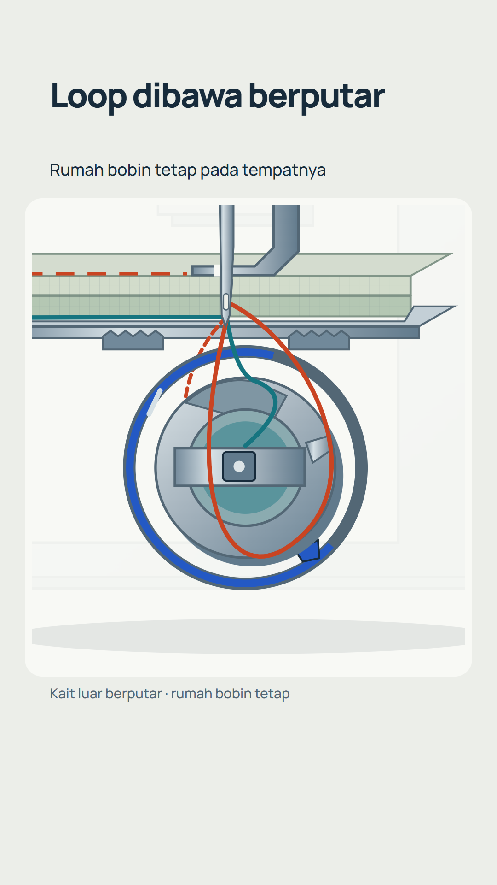
Pull out enough to distinguish rotating outer hook from stationary inner case.
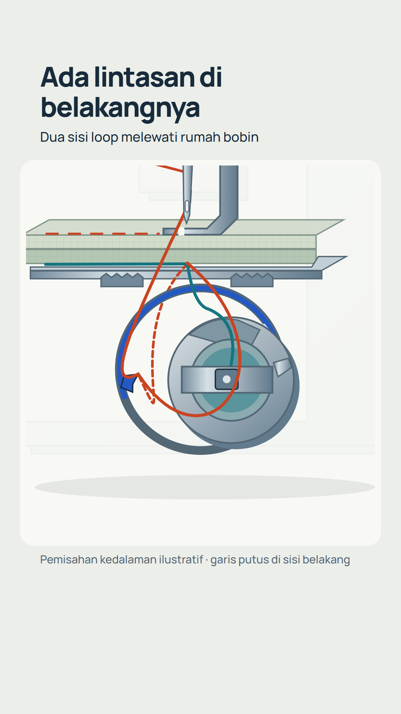
An explanatory depth separation exposes rear and front limbs around the same case.
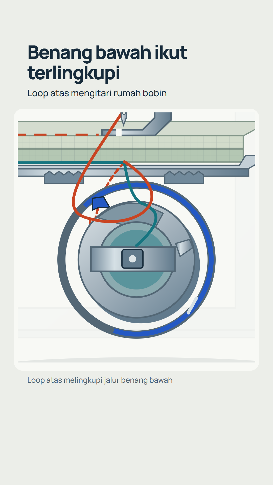
Show loop cast-off and lower thread crossing within the upper loop; retain cyan thread continuity.
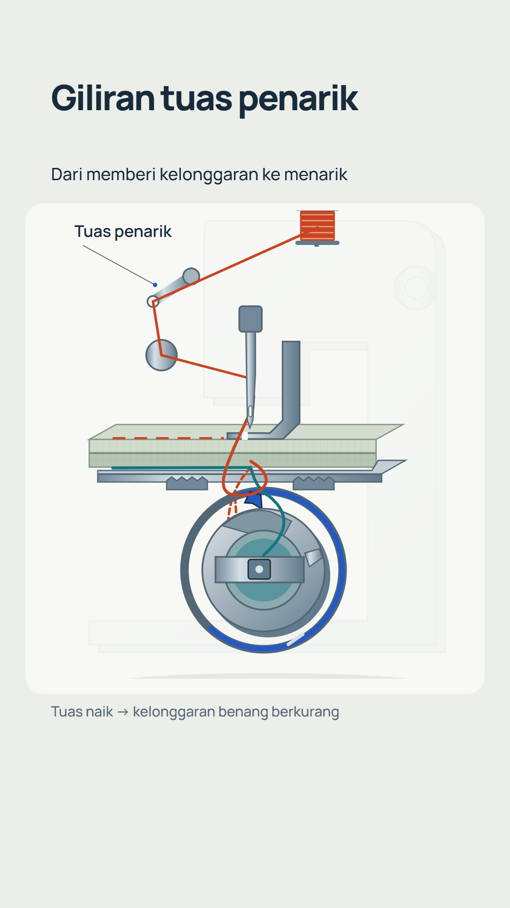
Reframe upward: take-up lever lifts while the lower loop shrinks in the same causal action.
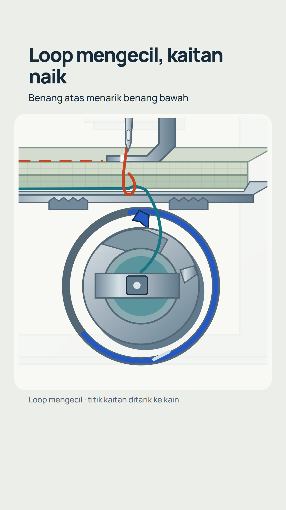
Follow the tightening red loop as it raises the cyan interlock into the cloth.
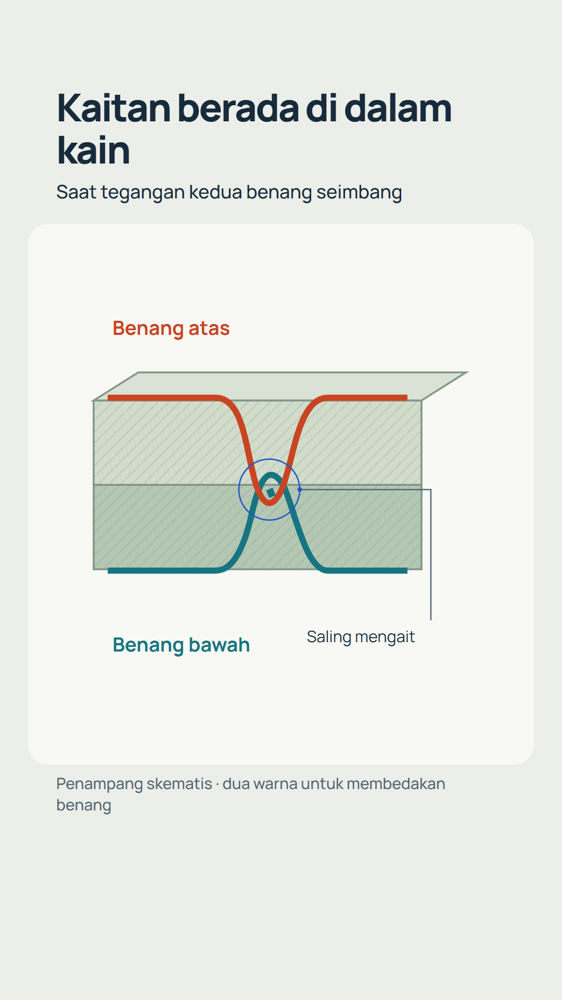
Section macro resolves interlocking paths inside two fabric layers, without drawing a knot.
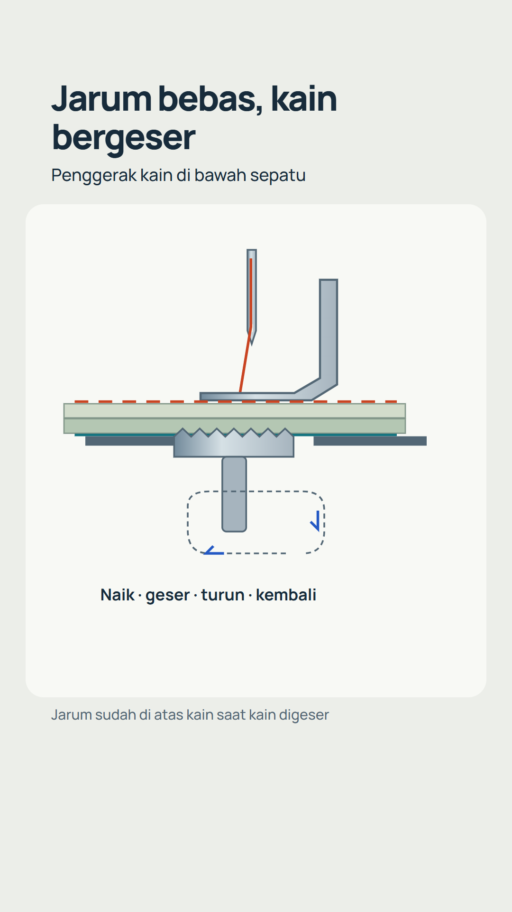
Side section: needle is clear; dog rises, moves cloth, drops, and returns beneath the plate.
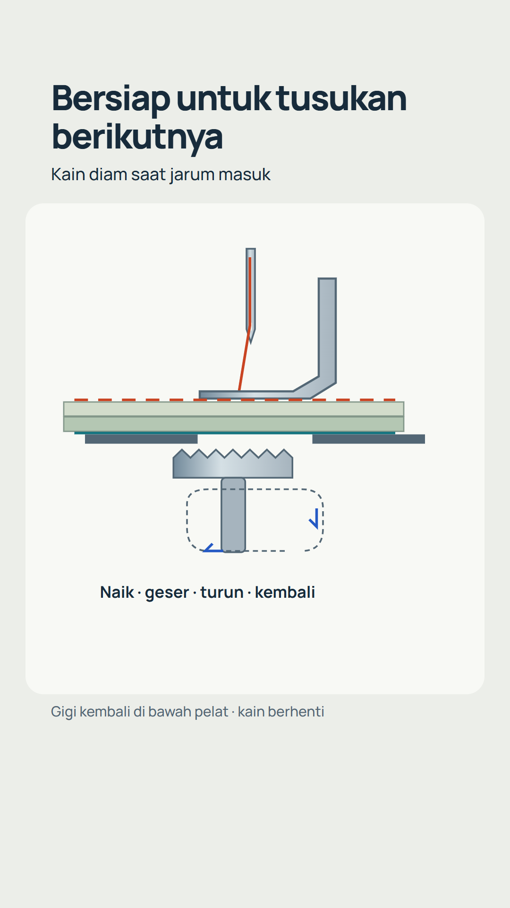
Dog returns below the throat plate; next needle descent happens only after feed stops.
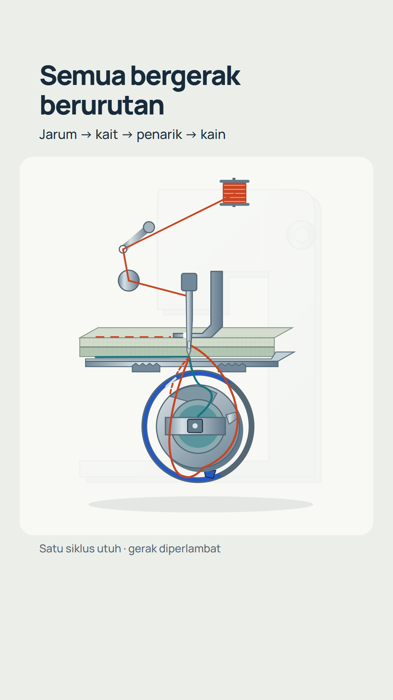
One complete coordinated slow cycle, with attention handed among the four subassemblies.
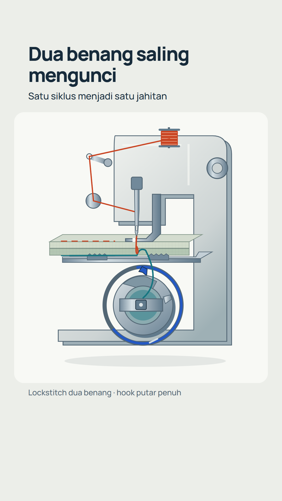
Return to the recognisable whole and resolve the red/cyan seam, then hold the completed interlock.